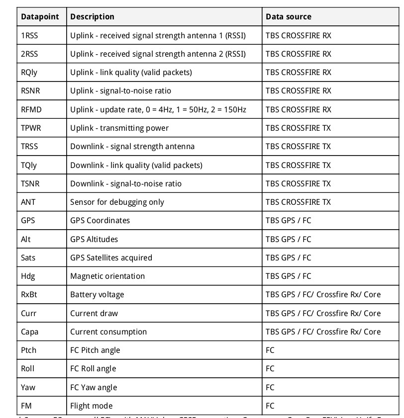
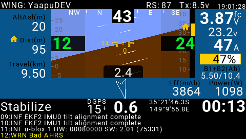
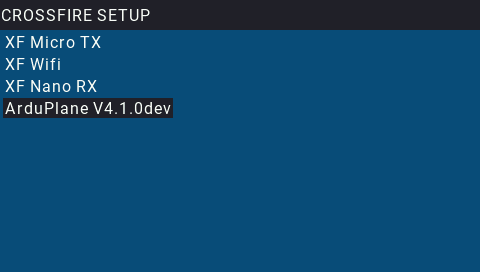
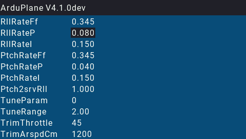

[copywiki destination=”plane,copter,rover,blimp”]¶
TBS Crossfire Telemetry¶
Note
ELRS (ExpressLRS) RC systems use the Crossfire protocol and are connected in a similar manner. However, it does not provide bi-directional telemetry like Crossfire.
TBS CRSF Receivers incorporate telemetry along with RC control information in their interface to ArduPilot. ArduPilot supports native CRSF telemetry and extensions to it that allow using the [copywiki destination=”plane,copter,rover,blimp”]. See [copywiki destination=”plane,copter,rover,blimp”] for connection and setup information.
OpenTx will discover the native CRSF Telemetry sensors, which then can be displayed on OpenTX telemetry screens or repeated from the CRSF TX module’s WIFI to MAVLink Ground Control Stations:
These values can be displayed on OpenTX transmitters in several ways:
Using the built-in telemetry screens:
In addition, by setting RC_OPTIONS bit 8, additional ArduPilot telemetry items are transferred which allows use of the [copywiki destination=”plane,copter,rover,blimp”] on OpenTX transmitters. Limitations and additional information is shown here.
Warning
when using RC_OPTIONS bit 8 for passthru, be sure no SERIAL port is setup to use SERIALx_PROTOCOL = 10 (Passthrough) to avoid a conflict and unreliable operation.
Several OpenTX scripts are normally provided for adjusting CRSF TX and RX system parameters. They are accessed by long pressing the SYS button.
ArduPilot Parameter Editor¶
In addition, the ArduPilot CRSF implementation provides for ArduPilot parameter adjustment, similar in function to ArduPilot’s OSD based parameter menu feature.
If the autopilot has any active OSD (OSD_TYPE not equal to “0”) , this feature is automatically enabled. If not, then selecting OSD_TYPE = 4 (TX only) will enable it.
Selecting the Crossfire Configuration LUA script in the transmitter will show:
And selecting the ArduPilot vehicle shown in that list will activate the OSD based parameter menu with a list of all parameters which have been setup for both OSD screens.
Note
Some autopilots will not display the parameter values that have text names, as text, but rather as a number, in order to save flash space. See Firmware Limitations on AutoPilot Hardware for those without CRSF TEXT capability.